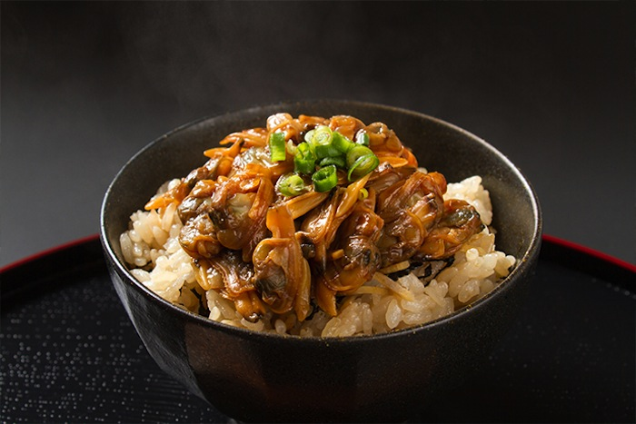
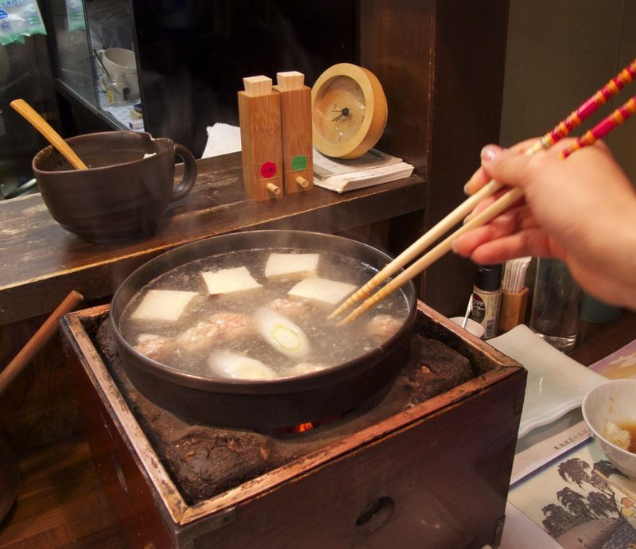
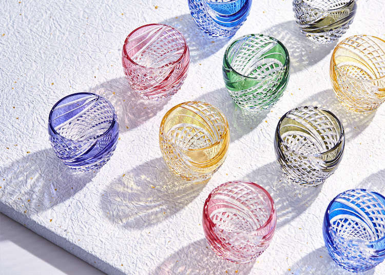
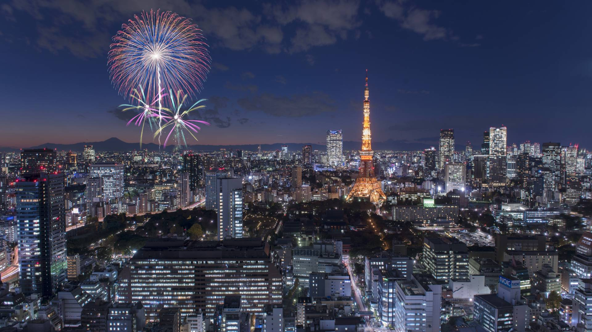
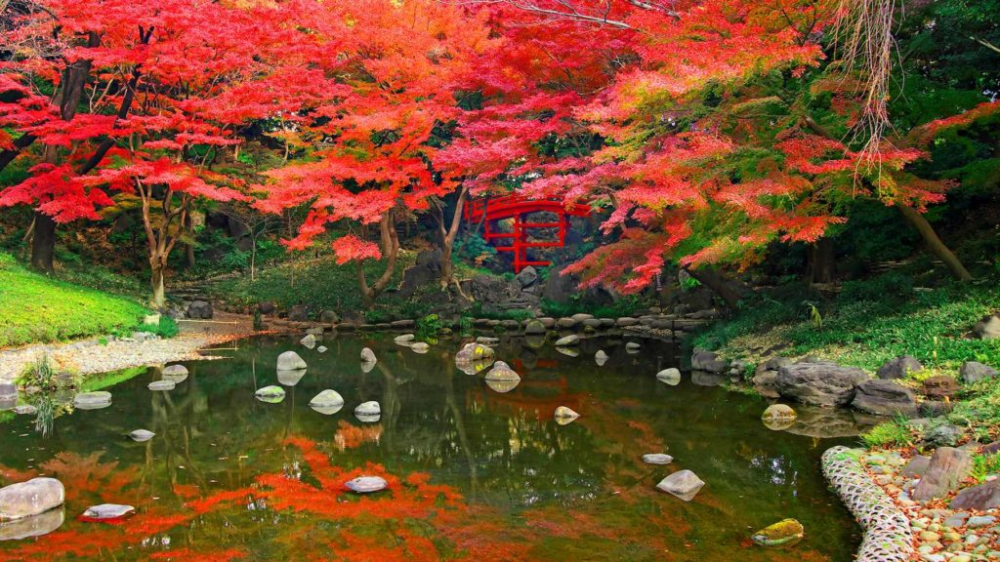
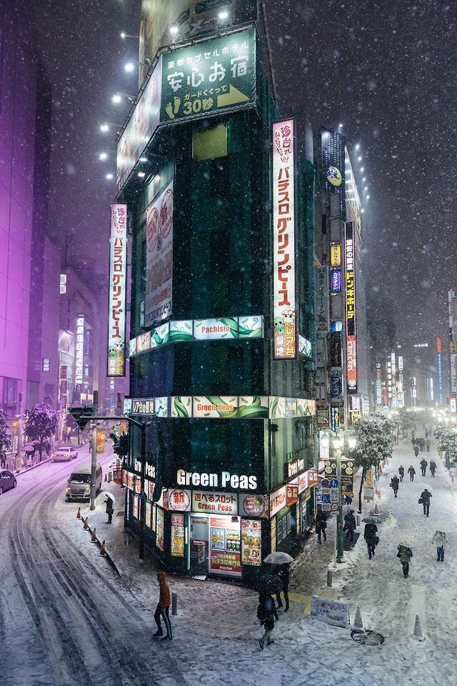

As Japan’s capital and the world’s most populous metropolis
Tokyo offers tradition and innovation, and unlimited opportunities to eat, shop and explore
Tokyo is located on Tokyo Bay in the Kanto region of Honshu, Japan’s largest island.
The closest airport is Haneda officially known as Tokyo International Airport.
okyo is known for its fashion and shopping, from the trendy shopping districts of Harajuku and Shibuya, to the luxury flagships of Ginza.
How to get there
Tokyo is served by two international airports, Haneda and Narita.
From there, you can reach central Tokyo by regular or limousine buses, or have the option of the monorail (Haneda only) or trains.
The Narita Express (N'EX) and Keisei Skyliner are JR and privately-run trains that connect Tokyo and Narita International Airport.
| Cherry Blossoms |
|---|
| Forecast of first bloom |
| 14 March 2021 |
| Forecast of full bloom |
| 22 March 2021 |
Don't miss
- Exploring Tokyo's dizzying array of restaurant and dining options, from theme cafes to haute cuisine
- Checking out the latest electronics, games and gadgets at Akihabara, the home of technology and anime culture
- Visiting Tokyo' s most famous temple, Sensoji, before ferrying down the Sumida River
- Learn the role the city's waterways played in Edo-era Tokyo
Local Specialities
| 
Fukagawameshi Yudofu, literally "hot-water tofu", is arguably the best way to enjoy high-quality, freshly made tofu. Tofu is warmed through in a simple broth made of water and kombu, and simple condiments are served alongside. Kyoto is the place to enjoy this, as it is the epicenter of Buddhist cuisine, in which yudofu features heavily. |

Tokyo Shamo Kyo-gashi are a type of wagashi, or traditional Japanese sweet. Kyo-gashi are beautiful, colorful and symbolic confections, custom-made for different occasions, so no Kyo-gashi will ever be exactly the same as another. |
 Monjayaki
MonjayakiBefore modern transportation was available, farmers grew only the vegetables most suited to the regions they farmed in. Kyo-yasai are vegetables traditionally grown in Kyoto for centuries, and they play an important role in modern Kyoto cuisine. |
 Edomae Sushi
Edomae SushiGreen tea from Uji is among the oldest and most highly regarded teas in Japan. You'll find it in tiny soba restaurants and temple gardens and many places in between. There are a variety of ways to enjoy green tea while in Uji. |
 Tokyo Swords
Tokyo SwordsHandmade ceramics and porcelain known as kyo yaki or Kiyomizu yaki are characterized by painted overglaze enamel. This craft evolved alongside other sophisticated pastimes in Kyoto, including the tea ceremony and flower arranging. |

Edo Cut Glass Invented in the late 17th century, kyo yuzen is a dyeing technique distinguished by vivid colors, subtle gradations, complex patterns and precision linework. The subtle use of stencils, brushes and resists produces designs on textiles similar to traditional Japanese paintings. |
Seasonal Highlights
 Spring
Spring With temperatures and moods thawing spring sees Tokyo at its prettiest. Cherry blossoms are the obvious draw but the season's other flowers festivals, foodstuffs and events are equally compelling reasons to start planning your Tokyo trip |

Summer When it comes to visiting the city in summer the first thing that comes to my mind is the fireworks festivals. They are simply the best and acclaimed things to see during the summertime in Tokyo. |
| 
Autumn Tokyo in November is a wonderful time the maple leaves in downtown Tokyo will be turning gorgeous hues of yellow and red. It is recommended that everyone visit Tokyo during autumn. |

Winter The winter season can be one of the most exciting times to visit Tokyo! There are many things to do in Tokyo in winter. With an average temperature of about 5°C in January, winter weather in Tokyo can be chilly but, thanks to the vast majority of sunny days, it’s quite enjoyable. |